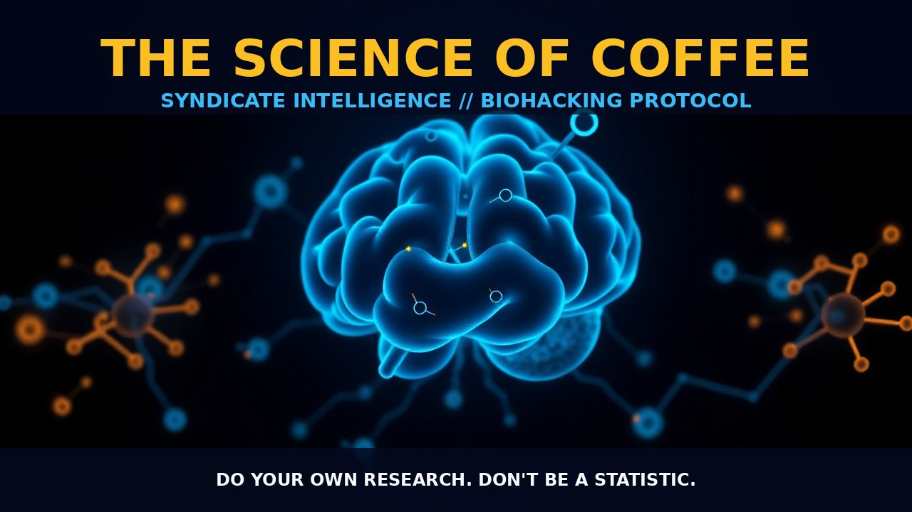

THE SCIENCE OF COFFEE

SCIENCE OF COFFEE: MASTERCLASS COFFEE IS MORE THAN JUST A MORNING PICK-ME-UP - IT'S A COMPLEX ELIXIR WITH A RICH, BOLD FLAVOR PROFILE THAT DEMANDS AN UNDERSTANDING OF INTRICATE MECHANISMS FROM CULTIVATION TO BIOLOGICAL INTERACTION. COFFEE'S COMPOSITION AND EFFECTS COFFEE IS NOT SIMPLY A SOURCE OF CAFFEINE; IT CONTAINS OVER 1,000 ACTIVE COMPOUNDS. THE REAL MAGIC HAPPENS WITH THE INTERPLAY BETWEEN THESE COMPONENTS AND OUR BODIES. KEY AMONG THEM IS CAFFEINE, AN ADENOSINE ANTAGONIST THAT ENHANCES ALERTNESS BY BLOCKING SLEEP-INDUCING SIGNALS IN THE BRAIN. THE COFFEE VOLATILE PROFILE INCLUDES CHLOROGENIC ACIDS AND FLAVONOIDS - POTENT ANTIOXIDANTS THAT INTERACT WITH CELLULAR PATHWAYS TO REDUCE INFLAMMATION, A RISK FACTOR FOR VARIOUS DISEASES. BIOMODULATION WITH COFFEE CAFFEINE'S EFFECTS ARE MULTIFACETED; IT INCREASES CORTICAL FIRING AND ALERTNESS WHILE ENHANCING MUSCLE CONTRACTION FORCE THROUGH INCREASED CATECHOLAMINE RELEASE. THIS DUAL ACTION CAN IMPROVE PHYSICAL PERFORMANCE. ADDITIONALLY, CERTAIN DITERPENES LIKE CAFESTROL SHOW ANTI-INFLAMMATORY PROPERTIES POTENTIALLY LINKED TO CELLULAR HEALTH. COFFEE'S TACTICAL APPLICATION FOR PEAK PERFORMANCE, CHOOSE HIGH-ALTITUDE-GROWN BEANS FOR THEIR BALANCED FLAVOR AND REDUCED ACIDITY. GRIND JUST BEFORE BREWING TO PRESERVE OILS. MANUAL BREWING METHODS LIKE THE FRENCH PRESS OR POUR-OVER ALLOW PRECISE CONTROL OVER EXTRACTION FACTORS. THE CHOICE OF FILTER IS CRITICAL; METAL FILTERS PRESERVE THE COFFEE'S NUANCED FLAVORS WITHOUT INTRODUCING PAPERY OFF-TASTES. TIMING MATTERS TOO - IT TAKES ABOUT 6-8 HOURS FOR A TYPICAL PERSON TO METABOLIZE 400MG (4 CUPS) OF CAFFEINE, MAKING LATE AFTERNOON CONSUMPTION IDEAL FOR EVENING USE. STACKING COFFEE WITH NOOTROPICS PAIRING COFFEE WITH L-THEANINE CAN AMPLIFY ITS COGNITIVE EFFECTS. L-THEANINE PROMOTES RELAXATION AND ENHANCES ALPHA WAVE ACTIVITY IN THE BRAIN WITHOUT SACRIFICING MENTAL CLARITY - A POTENT SYNERGY WHEN COMBINED WITH CAFFEINE'S STIMULATION. DO YOUR OWN RESEARCH. DON'T BE A STATISTIC.
PROSTAR LIFE HACK
Always verify protocol biological leverage with baseline biometric tracking. Data is sovereignty.
[ AUTHOR: LEAD TECHNICAL RESEARCHER ]